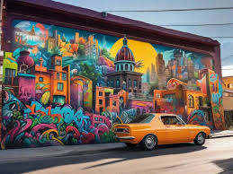
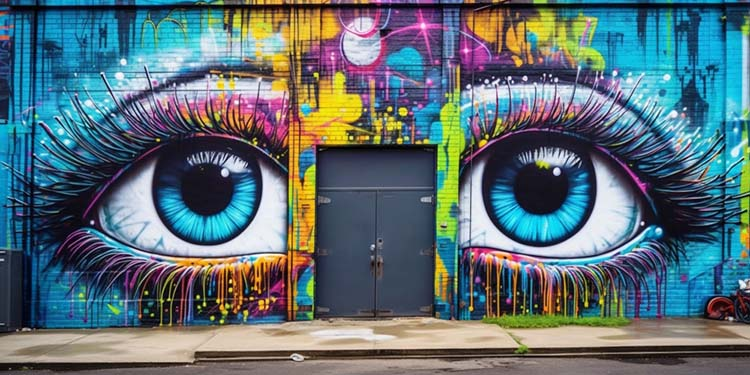
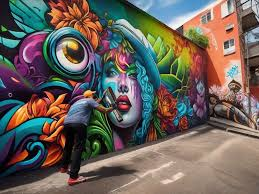

Sobre o Projeto
O hip hop é muito mais que um gênero musical: é um movimento cultural e social que nasceu nas periferias para dar voz às lutas e experiências de comunidades marginalizadas. No Brasil, o hip hop tem desempenhado um papel crucial na conscientização, educação e resistência frente às injustiças sociais.
Esse site tem o foco de aprofundar mais sobre o nosso projeto apresentado, e mais abaixo, tem um botão, onde você pode compartilhar suas letras de hiphop (pode ser de qualquer subgênero), para as outras pessoas verem.
Impacto Social do Hip Hop
- Conscientização: Promove o debate sobre temas como desigualdade, racismo e violência.
- Educação: Artistas oferecem workshops e palestras sobre direitos civis e sociais.
- Ação Comunitária: Mobilizações em torno de causas sociais e campanhas beneficentes.
Subgêneros do Hip Hop
Rap
O rap é um estilo musical que se caracteriza pela rima e pela entrega verbal. Nascido nas comunidades afro-americanas, o rap é uma forma de expressão que aborda questões sociais, políticas e pessoais, sendo uma voz poderosa para a juventude. É um dos subgêneros mais famosos do Hip Hop.
Ouça esta música, como exemplo, do Racionais Mc's:
Street Dance
O street dance é um estilo de dança que se desenvolveu nas ruas e nas festas, incorporando várias influências e estilos, como o breakdance, locking e popping. É uma forma de arte que permite a expressão individual e a criatividade, muitas vezes ligada à música hip hop, principalmente o Rap.
Grafite
O grafite é uma forma de arte urbana que utiliza as paredes das cidades como tela. O grafite é uma maneira de os artistas se expressarem, transmitindo mensagens sociais e políticas através de suas obras coloridas e impactantes.
Imagens de Grafite:
  Participe do Movimento
Envie suas próprias letras de hip hop e explore o acervo de outros participantes.